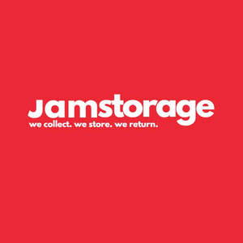

Trade Mark Journal No.2025/019 9 May 2025
UK00004160135 13 February 2025 (20,35,39)

- Class 20
- Storage furniture.
- Class 35
- Relocation services for businesses; Businesses (Relocation services for -); Business relocation services.
- Class 39
- Storage; Container storage; Transport and storage; Refrigeration storage; Transportation and storage; Refrigerated storage; Storage of luggage; Luggage storage; Rental of storage containers; Storage containers (Rental of -); Rental of containers for warehousing and storage; Storage of furniture; Furniture storage; Depository storage; Rental of storage space; Bulk storage; Storage of freight; Storage of goods; Goods (Storage of -); Storage of baggage; Storage services; Storage of containers and cargo; Vehicle storage; Rental of storage lockers; Storage of clothes; Storage of clothing; Storage of documents; Rental of refrigerated storage; Storage of vehicles; Storage of parcels; Boat storage; Storage (Boat -); Warehouse storage services; Removals; Furniture removals; Household removals; Removals (Household -); Commercial furniture removals; Removal services; Removal of domestic furniture; Overseas removal services; Removal services [moving services]; Household removal services; Removal of commercial furniture; Packing of goods for removal; Commercial removal services; Removal of domestic goods; Removal of household goods; Rental of moving vans; Moving van services; Temporary storage of deliveries; Packing services; Haulier (Services of a -); Services for the storage of freight; Storage services for freight; Hauling services; Furniture moving; Moving van transport.
Way Moving Group Limited